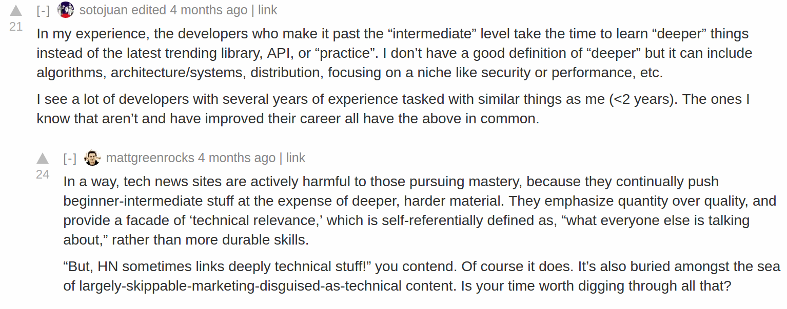

Algo de lo que hice esta semana (03/04/2017 - 08/04/2017)
Hace mucho tiempo no posteo nada entonces esto es más o menos un resumen de lo que he estado haciendo:
Mi trabajo ha sido ciertamente retador en algunas cosas. Por una parte creo que ya atravesé una etapa en la que mi código es un poquito menos chambón y ya sé antecederme a posibles críticas. Tenemos un esquema de abrir pull-requests, dar feedback y solo hacer merge cuando al menos otros dos desarrolladores hayan dado su visto bueno. Al principio la cosa me costó por que me “daban” muy duro: que usar tal clase desde tal lado acoplaba el código, que mejor aislar ciertas responsabilidades, etc … Y la verdad es que no eran cosas difíciles de notar o corregir, eran más que todo mañas a las que me había acostumbrado. Creo que ahora soy mucho más conciente del código que escribo. Ahora mismo hemos pausado las tareas de desarrollo de features nuevos y estamos haciendo ajustes, algunos de ellos de infraestructura. Algunas cosas son relacionadas con loguear lo más que se pueda y consultarlo fácilmente en Kibana. De igual forma también extraemos métricas de monitoreo y las reportamos a Graphite para después consultarlas con Grafana.
He estado haciendo las vueltas para la visa de trabajo. La cosa se ha demorado mucho más de lo que debería. Creo que en las próximas semanas voy a enviar los papeles y a la vuelta de 3 semanas debería tener una respuesta.
Por otra parte he estado siguiendo este curso sobre lenguajes de programación. Utiliza Haskell y está enfocado a intérpretes, no compiladores. Me salté algunas de las clases que tratan sobre cosas de Haskell con las que ya estaba familiarizado y ahora mismo voy en la parte de gramáticas. Ha sido relativamente divertido y he aprendido sobre el cálculo lambda, la notación de big step semantics y sobre continuation passing style (Aunque no sé bien como cuadra esto último con el resto del curso). Y algo relacionado que he estado haciendo es seguir este tutorial sobre como construir un compilador incrementalmente. Estoy usando Haskell y no Common-lisp como en el tutorial.
Sobre libros: leí Notas al pie de Gaza que es un trabajo periodístico en forma de novela gráfica sobre dos masacres de palestinos realizadas por el ejercito israelí en la decada de los 50s. Es más que todo un trabajo periodístico sobre esos dos incidentes y se basa en multiples entrevistas. Algo curioso es que el autor también narra como consiguió la información. Lo hizo en 2003 y durante esta época hubo desalojos forzados por parte de los israelíes. Basicamente derrumbaban casas de palestinos bajo diversas excusas: que alojaban insurgentes o que habían visto insurgentes cerca de las casas, que las casas escondían tuneles hacia Egipto, y así… .Entonces todos esos abusos actuales (que seguro hoy en 2017 persistirán) hacen eco de atrocidades peores que los israelíes cometieron 50 años antes.
También leí El Aleph. Creo que había leído algunos de estos cuentos cuando estaba en el colegio. Algo que me pareció raro es que muchos de los cuentos parecen ser el mismo, algunos tienen una similitud temática muy sútil que me es difícil de concretar. Los diferentes cuentos parecen compartir una temática de dualidad, o de enemistad, de obsesión mutua. No sabría como definirlo concretamente.
Ahora empecé a leer 1984. Me ha gustado hasta ahora, tal vez excepto por lo inverosímil que me parece el “romance”.
Ahora estoy intentando dejar de leer blog posts, o consumir material técnico a través de Twitter. Quiero concentrarme en leer libros y hacer tutoriales más profundos. Esto me recuerda este thread en Lobsters:
